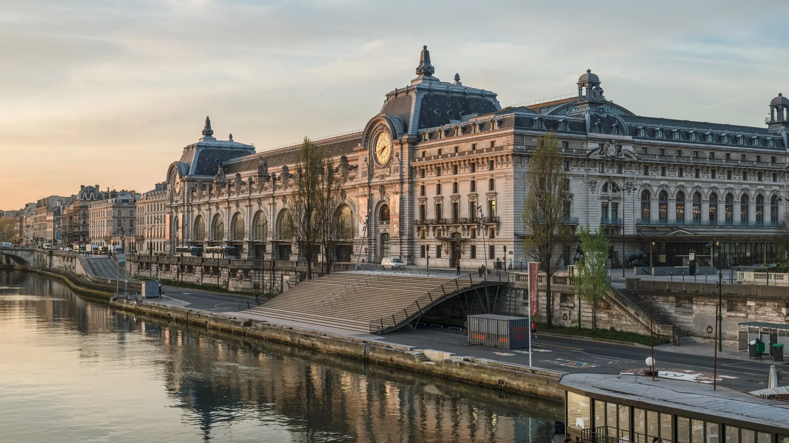

{kind=link}
관광·미술관
Nous avons déjà des billets.
이미 표가 있습니다.
누 자봉 데자 데 비예

센(Seine) 강 좌안, 튈르리 정원 맞은편에 자리 잡은 세계에서 가장 풍부한 인상주의(Impressionism) 및 후기 인상주의 걸작 컬렉션을 소장한 프랑스 국립 미술관이다.
1900년 파리 만국박람회를 위해 건립된 벨 에포크 시대의 웅장한 기차역(Gare d'Orsay)을 1986년 건축가 가에 아울렌티(Gae Aulenti)가 빛이 쏟아지는 현대 미술관으로 완벽하게 탈바꿈시켰다.
1848년 2월 혁명부터 1914년 제1차 세계대전 이전까지의 프랑스 예술을 집대성하여, 0층의 고전주의와 사실주의(밀레, 쿠르베, 마네의 『풀밭 위의 점심식사』), 2층의 후기 인상주의(반 고흐의 『자화상』, 『아를의 별이 빛나는 밤』, 고갱, 세잔), 5층의 인상주의 전성기(모네의 『야외의 여인』, 르누아르의 『물랭 드 라 갈레트의 무도회』, 드가의 발레리나)가 시대순으로 파노라마처럼 펼쳐진다.
"기차역 특유의 아치형 철골 유리 천장 아래서, 고전 미술의 엄격함을 깨고 햇살과 색채의 혁명을 일으킨 인상파 거장들의 붓 터치를 가장 완벽한 층별 동선으로 만끽할 수 있는 파리 최고의 미술관이다." 입장 후 곧장 에스컬레이터를 타고 5층 인상주의 갤러리로 직행해 모네와 르누아르를 감상하고 대형 시계창 너머 몽마르트르를 조망한 뒤, 2층 반 고흐 전시실과 0층 중앙 조각 통로로 내려오는 하향식 관람 코스가 가장 효율적이다.
| 운영시간 | 화–일 09:30–18:00 · 목요일 21:45까지 (마지막 입장 21:00 · 전시실 21:15 폐쇄) |
|---|---|
| 휴무 | 월요일 (+5/1·12/25) |
| 요금 | 온라인 €16 / 현장 €14 |
| 예약 | 재확인 |
| 메모 | Mary Cassatt, L'indépendante 2026/10/6–2027/1/31 (프랑스 최초 대규모 카사트전) |
| 항목 | 상세 정보 |
|---|---|
| 위치 | 1 Rue de la Légion d'Honneur, 75007 Paris |
| 운영 시간 | 화요일–일요일 09:30–18:00 (목요일 야간 21:45까지 연장 개방) / 매주 월요일 휴관 |
| 입장료 | 일반 성인 €16.00 (온라인 예매) / 목요일 야간 할인 €12.00 (18:00 이후) / 18세 미만 무료 |
| 사전 온라인 예매 (필수 권장) | 공식 웹사이트(musee-orsay.fr)에서 입장 시간 지정 티켓 사전 예매 필수 (현장 대기열 최소화) |
| 교통 접근 | RER C선 Musée d'Orsay역 출구 바로 앞, 메트로 12호선 Solférino역 도보 4분 |
| Paris Museum Pass | 뮤지엄 패스 소지자도 공식 사이트에서 무료 시간 슬롯 예약 필수 |
Nous avons déjà des billets.
이미 표가 있습니다.
누 자봉 데자 데 비예
On peut prendre des photos ?
사진 찍어도 되나요?
옹 푀 프랑드르 데 포토
Où commence la visite ?
관람은 어디서 시작하나요?
우 코망스 라 비지트

1868년 앙리 라브루스트가 주철 기둥과 9개 도자기 돔으로 완성한 19세기 건축의 걸작 '라브루스트 열람실'과 일반에 전면 무료 개방된 거대한 타원형 '오발 열람실(Salle Ovale)', 프랑스 국립도서관 박물관.

18세기 원형 곡물거래소를 세계적인 건축가 안도 다다오가 노출 콘크리트 원통 실린더로 리노베이션한 현대미술관. 프랑수아 피노 회장의 세계적 현대미술 컬렉션과 1889년 돔 천장 무역 파노라마 프레스코화.

렌조 피아노와 리처드 로저스가 건물 배관과 골격을 외벽으로 노출시킨 20세기 하이테크 건축의 전설이자 유럽 최대 근현대미술관. ⚠ 2025년 가을부터 2030년까지 전면 개보수 공사로 본관 폐관 중.

클로드 모네가 43년간 직접 꽃과 연못을 가꾸며 불후의 『수련』 대작을 창조해낸 살아있는 인상파 캔버스. 초록색 일본식 다리가 걸린 '물의 정원(Jardin d'eau)'과 핑크빛 모네 생가 아틀리에.

1900년 파리 만국박람회를 위해 건립된 45m 높이 아르누보 철골 유리 네이브(Nave)의 기념비적 국립 전시장. 2024 파리 올림픽을 거쳐 리노베이션 완료 후 재개관한 파리 문화 예술의 중심지.

중세 소르본 대학 교수와 학생들이 공용어로 라틴어를 쓰던 데서 유래한 800년 파리 지성의 요람이자 센 강 좌안(Rive Gauche)의 심장. 프랑스 위인들의 성소 팡테옹(Panthéon), 셰익스피어 앤 컴퍼니, 뤽상부르 공원.